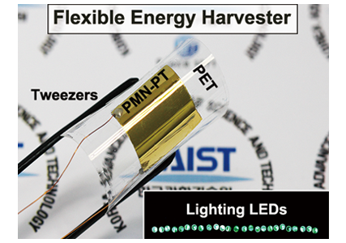
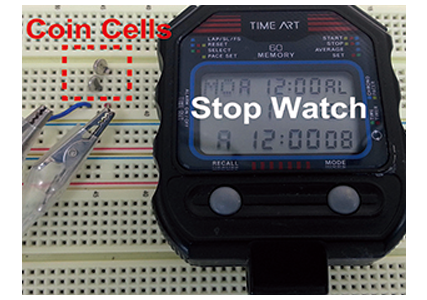
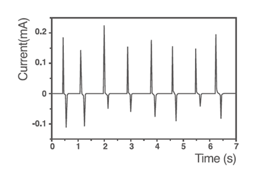
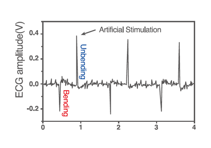

주제별 연구성과
주제별 연구성과
KAIST RESEARCH ACHIEVEMENTS
인체내에서 자가발전되는
인공심장 박동기
신소재공학과 이건재
요약
본 연구를 조금 더 발전시켜 유연한 압전 자가발전기를 이용한 생체 내 전기발전 기술이 개발되면 이식형 심장박동기의 배터리를 충전하거나 직접적으로 심장을 자극하는데 이용될 수 있다. 이를 통해 의료사고와 부대비용을 줄일 수 있고, 새로운 시장을 창출해 경제발전을 도모할 수 있다.
연구내용
인공심장박동기는 심장박동이 불규칙한 환자의 몸속에 이식되어 심장박동을 정상적으로 유지시키는데 필수적인 의료장치이다. 하지만 제한된 배터리의 수명 때문에 주기적으로 기기의 본체를 교체하는 시술이 필요한 단점이 있다. 만약 인체 내에서 스스로 전기발전이 가능한 유연한 압전 자가발전기를 개발하여 배터리를 충전하고 심장을 직접적으로 자극할 수 있다면 기기교체수술에서 발생할 수 있는 의료사고 및 부대비용을 줄여 환자의 불편을 최소화할 수 있을 것이다.




본 연구에서는 체내에서 자가 전원공급이 가능한 자가발전형 인공심장박동기 구현을 위해 단결정의 PMN-PT 압전박막을 이용하여 고성능의 유연한 자가발전기를 개발하였다. 제작된 유연한 압전 자가발전기는 굽힘과 누름과 같은 기계적인 변형에 의해 8.2V의 전압과 0.22mA의 전류를 발전하였는데, 발생된 전류는 지금까지 발표된 유연한 압전세라믹 자가 발전기중에 최고로 크다. 자체 전원공급이 가능한 박동기의 구현을 위해 자가발전기를 이용해 몇 가지 시연을 진행하였다. 유연 자가발전기를 굽힐 때 발생되는 전기에너지를 이용해 50개의 LED를 점등하였고, 리튬이온배터리를 충전하였다. 더 나아가 자가발전기를 이용해 심장의 전기자극을 실시하였는데, 우수한 전기에너지 발전특성을 이용해 인공적으로 심장 박동을 규칙화하는데 성공하였다. 추후 연구를 통해 인공심장박동기 뿐만 아니라 생체이식형 의료기기의 수명을 늘릴 수 있을 것으로 예상된다.
본 기술을 발전시키면 인공심장박동기의 배터리 교체 수술주기를 늘려 환자의 의학적, 경제적비용을 최소화 할 수 있을 것이다. 또한 그동안 심장박동기의 에너지가 부족해 불가능하였던 심장의 추가적인 상태 진단을 통해 심장마비 예방도 가능할 것이다.
연구실적
ㆍ재료관련 세계 저명 SCI 저널 개제 및 표지선정(Advanced Materials)
ㆍ국내외 언론보도 20건 이상(KBS, MBC, YTN 포함)
참고자료
ㆍ'자가발전 심장박동기' 연구설명 및 홍보자료
ㆍ논문: G.-T. Hwang, et al. Self-Powered Cardiac Pacemaker Enabled by Flexible Single Crystalline PMN-PT Piezoelectric Energy Harvester. Advanced Materials, 2014
연구지원
ㆍ한국연구재단 도약연구: 중견연구자지원사업, 글로벌프런티어사업